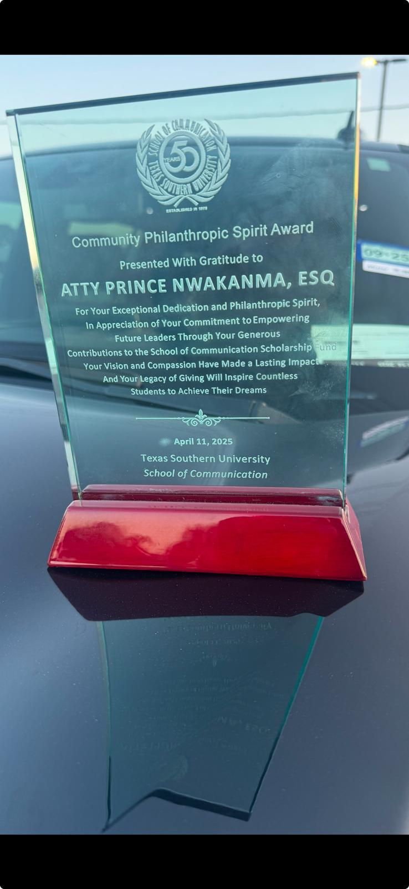

About Prince Uche Nwakanma

Prince Uche Nwakanma built his career through years of legal excellence, business leadership, and community service. His journey reflects a strong commitment to justice, compassion, and long-term impact.
After earning his Bachelor of Science degree in Biology from the University of Houston-Downtown, he pursued a law degree at the Thurgood Marshall School of Law. In 2003, Prince Uche Nwakanma became licensed to practice law in the United States and went on to represent more than 6,000 clients across federal law matters.
His work earned him recognition as one of the Top 50 Black Lawyers in the United States, reflecting both professional excellence and ethical leadership.
Today, Prince Uche Nwakanma continues to combine legal experience, business strategy, and humanitarian service to support communities through sustainable programs and leadership initiatives.
Prince Uche Nwakanma has spent decades building a respected legal and professional career in the United States.
Over the years, he has:
His leadership approach focuses on integrity, responsibility, and creating opportunities that improve lives across generations.
Prince Nwakanma remains dedicated to bridging professional excellence with humanitarian service, ensuring that every initiative produces measurable, generational transformation. The Prince Goodwill Foundation is one such initiative, designed to create sustainable impact through education, healthcare, and community development.


